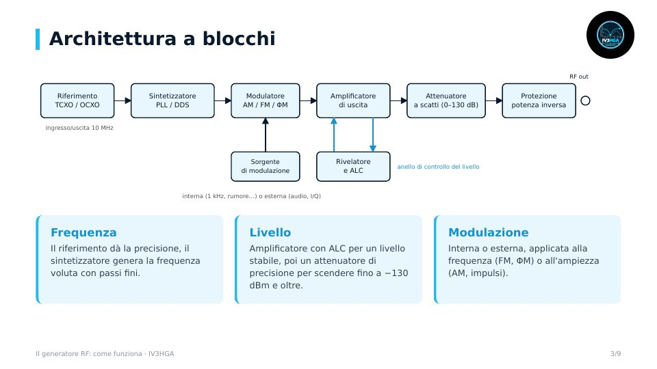

Capitolo 5 · Modulo 1
Il generatore RF: come funziona
- A cosa serve: il compagno dell'analizzatore
- Architettura: riferimento, PLL/DDS, modulatore, ALC, attenuatore
- Il riferimento a 10 MHz e la precisione in frequenza
- Protezione dalla potenza inversa, tipi di generatori e specifiche